Буль функция ва унинг турли характеристикалари
Криптографик талаблар дастурий таъминоти
“Буль функция” тушунчаси математика асослари ва математик логика йўналишида олиб борилган тадкикотлар натижасида XIX асрнинг иккинчи ярмига келиб шаклланади. Мазкур функцияга математик логиканинг асосчиларидан бири бўлган Англиялик математик ва философ Джордж Буля (G.Boole, –18151864) шарафига “буль” номи берилади. XX асрнинг биринчи ярмида буль функциялар математиканинг асоси учун факатгина фундаментал характерга эга бўлган. Шунингдек, ушбу функциялардан кўп вакт давомида амалий масалаларни ечишда фойдаланилмаган.
ХХ асрнинг ўрталарига келиб алока ва хисоблаш техникалари ривожланишининг янги боскичи бошланади. Айнан мазкур даврда ахборот ва кодлаш назариялари, чекли функционал тизимлар ва математик криптография каби математиканинг амалий сохалари янада шаклланди. Шундан сўнг амалиёт шуни кўрсатдики, ахборотни кайта ишловчи дискрет воситаларни тахлил ва синтез килишда буль функция назариясидан фойдаланиш самарали хисобланади. Шу тарика мазкур назария бугунги кунга кадар чукур ўрганилмокда ва амалий тадбикларига эга. Хусусан, криптографиянинг кўплаб йўналишларидаги турли масалаларни формаллаштириш ва уларни ечишда буль функциялар асос бўлиб хизмат килади.
Айтайлик 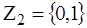 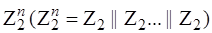
Таъриф. 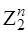 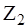
Кўриш мумкинки, n параметр ошиши билан 𝓕n тўплам элементларининг сони (|𝓕n|, тўплам куввати) хам кескин ўсади.
Масалан:
|𝓕1|=4, |𝓕2|=16, |𝓕3|=256, |𝓕4|=65536, |𝓕5|=4294967296, |𝓕6|=18446744073709551616.
Яъни, 𝓕n – тўпламнинг куввати куйидаги (1) тенглик оркали аникланади.
|𝓕n|= 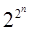
Буль функцияларга мисол сифатида
куйидагиларни келтириш мумкин ( – XOR амалини ифодаловчи белги):
– XOR амалини ифодаловчи белги):
f1 ( 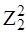 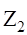
f2 ( 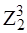 x2
x2 x3=1 бўлса
f2(x1,x2,x3)=1 акс
холда
f2(x1,x2,x3)=0.
x3=1 бўлса
f2(x1,x2,x3)=1 акс
холда
f2(x1,x2,x3)=0.
Хар бир n та ўзгарувчили буль функция кийматини 2n узунликдаги вектор оркали бир кийматли ифодалаш (аниклаш) мумкин. Масалан, юкоридаги f1 ва f2 функцияларга куйидаги векторлар мос келади: (1001) ва (01101001). Шунингдек, ихтиёрий f𝓕n – буль функцияни унга мос бўлган “Алгебраик нормал форма” (АНФ) кўринишида хам бир кийматли ифодалаш мумкин.
Алгебраик нормал форма “Жегалкин кўпхади” деб хам юритилади ва куйидагича умумий кўринишга эга:
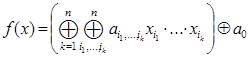
бу ерда: aj={0,1}, i1,...,ik – индекслар ўзаро фаркли.
Юкорида келтирилган
f1 ва f2 функцияларни ифодаловчи АНФлар эса
куйидагича:
f1(x1,x2)=x2 x1
x1 1,
f2(x1,x2,x3)=x3
1,
f2(x1,x2,x3)=x3 x2
x2 x1.
x1.
Таъриф. f𝓕n функциянинг алгебраик чизиксизлик даражаси (deg(f)) деб унинг АНФ таркибидаги энг юкори даражали бирхад даражасига айтилади.
Масалан,
f1(x1,x2,x3)=x3x1 x2
x2 x1 учун
deg(f1)=2 ва
f2(x1,x2)=x1
x1 учун
deg(f1)=2 ва
f2(x1,x2)=x1 x2
x2 1
учун deg(f2)=1 ўринли.
1
учун deg(f2)=1 ўринли.
Барча deg(f) 1 ўринли бўлган f𝓕n
функциялар тўпламини 𝓐n оркали
белгилаймиз, яъни:
1 ўринли бўлган f𝓕n
функциялар тўпламини 𝓐n оркали
белгилаймиз, яъни:
𝓐n={f𝓕n |
deg(f) 1}
(3)
1}
(3)
Мазкур турдаги функциялар “Аффин функциялар” деб аталади ва ихтиёрий аффин функция куйидаги АНФ кўринишга эга:
f
(x1,x2,...,xn)=anxn an-1xn-1
an-1xn-1 ...
... a1x1
a1x1 a0
(4)
a0
(4)
бу ерда: aj={0,1}.
Аффин функция учун f(0)=0 (яъни a0=0) ўринли бўлса, ушбу функцияларга “Чизикли функциялар” деб аталади:
𝓛n={f𝓐n | f(0)=0} (5)
Шунингдек, буль функцияларни алгебраик чизиксизлик даражаларига мос холда турлича номлаш мумкин.
Таъриф. х=(х1,х2,х3,...,хn) – векторнинг (ёки f – буль функциянинг) Хэмминг огирлиги (wt(x)) деб x вектор таркибидаги бирлар сонига айтилади.
Масалан: x=100101 учун wt(х)=3,
f(x1,x2)=x2 x1
x1 1
учун wt(f)=2 ўринли.
1
учун wt(f)=2 ўринли.
Агарда бирор f𝓕n функция учун wt(f)=2n-1 ўринли бўлса, ушбу функция “Баланслашган функция” хисобланади. Шунга кўра, 𝓕n – тўпламдаги барча баланслашган буль функциялар сони куйидагича аникланади:
| f𝓕n
| wt(f)=2n-1|
= 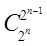
Таъриф. х ва y – векторлар (ёки f ва g – буль функциялар) орасидаги Хэмминг масофаси (dist(x,y)) деб x ва y векторларнинг ўзаро фаркли бўлган мос элементлари сонига айтилади. Ушбу таърифга кўра куйидаги тенглик ўринли:
dist(x,y)= wt(x y)
(7)
y)
(7)
Таъриф. f(х)𝓕n функция
учун u 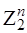
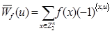
бу ерда: 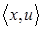 x2u2
x2u2 ...
... xnun.
xnun.
Таъриф. f(x)𝓕n функция учун u – векторга нисбатан Уолш-Адамар алмаштириши деб куйидаги тенглик билан аникланувчи функцияга айтилади:
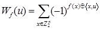
Таъриф. f(х)𝓕n функция билан барча g𝓐n аффин функциялар ўртасидаги энг кам Хэмминг масофасига f(х) функция чизиксизлиги (Nf) деб аталади, яъни:
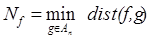
Юкоридаги таърифларга кўра, функция чизиксизлигини Уолш-Адамар алмаштириши оркали куйидагича ифодалаш ўринли:
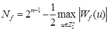
Шунингдек, Уолш-Адамар алмаштиришининг бўлиши мумкин бўлган энг кичик кийматига кўра, ихтиёрий f – буль функциянинг Nf – киймати учун куйидаги тенгсизлик (юкоридан бахолаш) ўринли:
Nf  2n-1 –
2n/2-1
(12)
2n-1 –
2n/2-1
(12)
Таъриф. f(х)𝓕n функция максимал-чизиксиз функция деб аталади, агар унинг Nf – чизиксизлик киймати 𝓕n тўплам элементлари учун бўлиши мумкин бўлган энг юкори чизиксизлик кийматига тенг бўлса.
Таъриф. f(х)𝓕n функция Бент-функция (ёки мутлако-чизиксиз) деб аталади, агар унинг барча Уолш-Адамар коэффициенти ±2n/2 га тенг бўлса.
Юкоридаги икки таърифга кўра, ўзгарувчилар сони ток бўлган буль функциялар таркибида бент-функция мавжуд эмаслиги, шунингдек ўзгарувчилар сони жуфт бўлган максимал-чизиксиз функциялар бент функцияларни ташкил этиши келиб чикади.
Таъриф. f(х)𝓕n
функция k даражали
корреляцион-иммунитетга эга (CI(k))
дейилади, агар 1 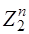 Wt(u)
Wt(u) k<n – шартни каноатлантирувчи барча u
k<n – шартни каноатлантирувчи барча u
Таъриф. f(x)𝓕n функция учун u – векторга нисбатан автокорреляция функцияси деб куйидаги тенглик билан аникланувчи функцияга айтилади:
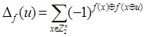
Айрим адабиётларда
автокорреляцион функция киймати сифатида 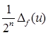
Таъриф. f(x)𝓕n – функция:
1) катъий лавин самарадорлик талабини (SAC)
бажаради, агар wt(u)=1 ўринли бўлган ихтиёрий u векторга нисбатан
f(x u)
u) f(x) – буль функция баланслашган
бўлса;
f(x) – буль функция баланслашган
бўлса;
2) k тартибли катъий лавин
самарадорлик талабини (SAC(k), 1 k<n) бажаради, агар f функциянинг
ихтиёрий k та аргументини фиксирлаш (0 ёки 1 киймат билан алмаштириш)
оркали хосил бўлган буль функция SACни каноатлантирса;
k<n) бажаради, агар f функциянинг
ихтиёрий k та аргументини фиксирлаш (0 ёки 1 киймат билан алмаштириш)
оркали хосил бўлган буль функция SACни каноатлантирса;
3) l тартибли таркалиш
талабини (PC(l), 1<l n) бажаради, агар
1
n) бажаради, агар
1 wt(u)
wt(u) l ўринли бўлган
ихтиёрий u векторга нисбатан f(x
l ўринли бўлган
ихтиёрий u векторга нисбатан f(x u)
u) f(x) – буль функция баланслашган
бўлса.
f(x) – буль функция баланслашган
бўлса.
Турли криптоалгоритмларнинг асосини ташкил этувчи элемент бу бирор чекли майдонда аникланган акслантиришлар (Y=F(x)) хисобланади.
Айтайлик Y=F(x):
==> 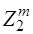
Таъриф. F(x)𝓕n,m (n m) – акслантириши
баланслашган (регуляр) дейилади, агар ихтиёрий v учун куйидаги тенглик ўринли бўлса:
m) – акслантириши
баланслашган (регуляр) дейилади, агар ихтиёрий v учун куйидаги тенглик ўринли бўлса:
#{x | F(x)=v}=2n-m (14)
Таъриф. F(x)𝓕n,m – акслантиришнинг умумий чизиксизлиги (NF) деб куйидаги тенглик билан аникланувчи кийматга айтилади:
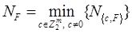
бу ерда: 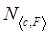 с2f2
с2f2 ...
... сmfm” – ифода натижасида
хосил бўлувчи буль функция чизиксизлиги.
сmfm” – ифода натижасида
хосил бўлувчи буль функция чизиксизлиги.
Таъриф. F(x)𝓕n,m – акслантиришнинг ўртача чизиксизлиги (’NF) деб куйидаги тенглик билан аникланувчи кийматга айтилади:
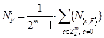
f(x) – буль функция ва F(x) – акслантиришларнинг юкорида кўриб ўтилган сонли характеристикалари ва турли хусусиятлари криптографияда кенг тадбикга эга бўлиб, криптоалгоритмлар хусусиятларини бахолашда мухим ахамият касб этади.
Чикувчи битлар богликсизлиги мезони
Шифрлаш алгоритми акслантиришларидан чикувчи кийматларнинг кирувчи кийматлар билан богликлиги ва чикувчи кийматларнинг ўзаро богликсизлигини кўрсатувчи мезон “Битлар богликсизлиги мезони” (Bit Independence Criterion, (BIC)) хисобланади.
Таъриф. 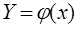 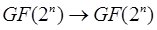 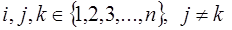
Акслантиришдан чикувчи иккита бит богликсизлигини аниклаш (ўлчаш) учун чикувчи векторнинг j- ва k-компоненталари ўртасидаги корреляция коэффициенти BIC(aj,ak) дан фойдаланилади:
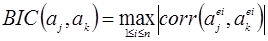
бу ерда: 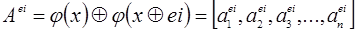 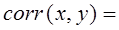 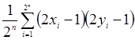 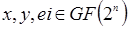
Умумий холда, 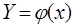
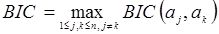
Ушбу параметр учун 0 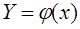 BIC
BIC 1 – ўринли бўлиб, айнан
ушбу киймат
1 – ўринли бўлиб, айнан
ушбу киймат
Машклар. Айтайлик, 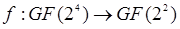
f(x)={0,0,0,0,0,1,1,0,1,1,1,1,1,0,0,1}
Ушбу функциянинг сонли характеристикалари аниклансин.